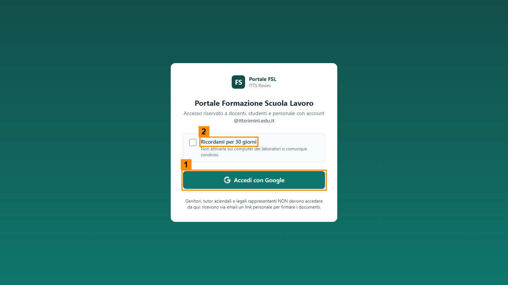

Guida all'accesso
Tempo indicativo: 10 minuti. Tutti i dati nel portale sono inventati e verranno cancellati alla fine del corso.
Cosa serve
- Il tuo account della scuola, quello che usi per Gemini e per la posta. Chi interpreta lo studente usa invece l'account di prova che gli viene consegnato.
- L'indirizzo del portale: lo scrive Thomas alla lavagna.
- La casella di posta della scuola aperta in un'altra scheda del browser: durante il laboratorio ti arriveranno email vere.
Se entri nel portale con un account (Dirigente, Responsabile FSL, Segreteria, Tutor interno, Studente)
- Apri il browser e vai all'indirizzo del portale.
- Controlla la casella Ricordami per 30 giorni (2 nell'immagine): deve restare spenta. Su un PC del laboratorio si siedono più persone, e con la casella accesa chi arriva dopo di te si troverebbe dentro con il tuo account.
- Premi Accedi con Google (1) e scegli l'account della scuola (chi fa lo Studente sceglie l'account di prova che gli è stato consegnato). Un indirizzo personale viene rifiutato.
- Guarda il menu a sinistra e confrontalo con la scheda del tuo ruolo.

Se il tuo ruolo è esterno (genitore, tutor aziendale, legale rappresentante)
Non hai un account e non entri dalla pagina di accesso. Quando arriva il momento, nella casella della scuola trovi una email con un link personale. Aprilo, premi Richiedi il codice via email, aspetta la seconda email con il codice di sei cifre, scrivilo e premi Conferma il codice. Il codice vale dieci minuti e se ne può chiedere uno nuovo una volta al minuto.
Il legale rappresentante riceve due link, in due momenti diversi: il primo per la scheda dei rischi, il secondo per la convenzione. Non sono lo stesso link.
Cosa controllare
- Il nome e il ruolo compaiono in alto a destra, vicino al bottone Esci.
- Il menu ha le voci previste dalla tua scheda. Se vedi solo Dashboard, il ruolo non è ancora stato assegnato al tuo account: avvisa Thomas.
- Se compare «La sessione è scaduta», rientra con Accedi con Google: succede dopo molte ore di inattività.
Alla fine
Premi sempre Esci, in alto a destra, prima di alzarti dal PC.
Se qualcosa non va
- Sei già dentro con il nome di un altro: premi Esci, poi rientra con il tuo account e lascia spenta la casella.
- L'accesso viene rifiutato: stai usando un indirizzo personale; esci dall'account personale e rientra con quello della scuola.
- L'email con il link o con il codice non arriva: guarda la posta indesiderata, aspetta un minuto e chiedi un nuovo codice.
- Non vedi il portale: chiama Thomas.